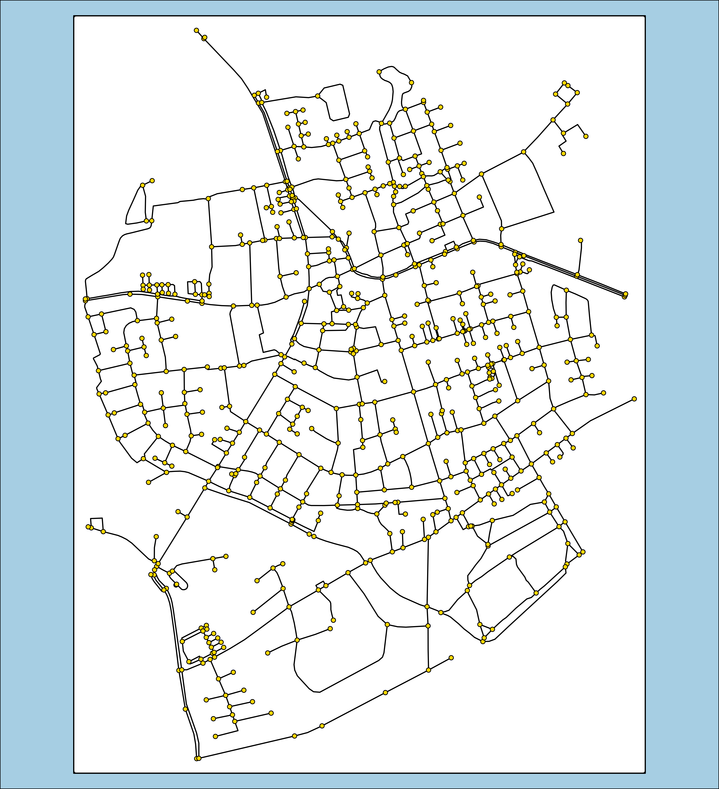
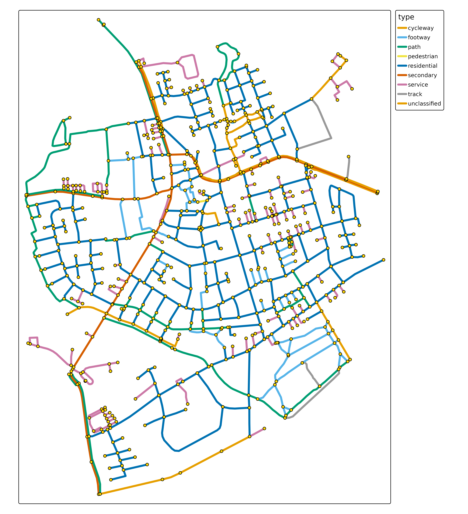

With tmap.networks network visualizations can be
made. It will handle sfnetwork objects (from the package sfnetworks)
natively.
library(sfnetworks)
library(tmap.networks)
(sfn = as_sfnetwork(roxel))
#> # A sfnetwork with 701 nodes and 851 edges
#> #
#> # CRS: EPSG:4326
#> #
#> # A directed multigraph with 14 components with spatially explicit edges
#> #
#> # Node data: 701 × 1 (active)
#> geometry
#> <POINT [°]>
#> 1 (7.533722 51.95556)
#> 2 (7.533461 51.95576)
#> 3 (7.532442 51.95422)
#> 4 (7.53209 51.95328)
#> 5 (7.532709 51.95209)
#> 6 (7.532869 51.95257)
#> # ℹ 695 more rows
#> #
#> # Edge data: 851 × 5
#> from to name type geometry
#> <int> <int> <chr> <fct> <LINESTRING [°]>
#> 1 1 2 Havixbecker Strasse residential (7.533722 51.95556, 7.533461 51…
#> 2 3 4 Pienersallee secondary (7.532442 51.95422, 7.53236 51.…
#> 3 5 6 Schulte-Bernd-Strasse residential (7.532709 51.95209, 7.532823 51…
#> # ℹ 848 more rowsBesides this new spatial data class "sfnetwork", this
package also features new map layers, albeit very basic so far:
tm_shape(sfn) +
tm_network()
